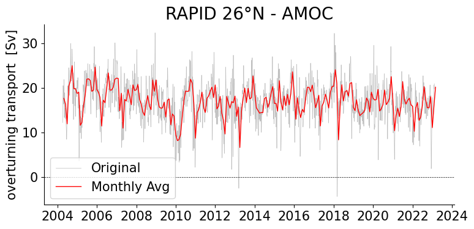

template-project demo
The purpose of this notebook is to demonstrate the functionality of template-project.
The demo is organised to show
Step 1: Explanation
Step 2: Explanation
Note that when you submit a pull request, you should clear all outputs from your python notebook for a cleaner merge.
[1]:
from pathlib import Path
from template_project import plotters, readers, tools, utilities, writers
[2]:
ds = readers.load_sample_dataset()
20250607T054229 INFO setup_logger Logger initialized for array: rapid, writing to /home/runner/work/oceanarray/oceanarray/logs/RAPID_20250607T05_read.log
20250607T054229 INFO load_dataset Loading dataset for array: rapid
20250607T054229 INFO read_rapid Starting to read RAPID dataset
20250607T054229 INFO resolve_file_path Using cached file: /home/runner/work/oceanarray/oceanarray/data/moc_transports.nc
20250607T054229 INFO read_rapid Opening RAPID dataset: /home/runner/work/oceanarray/oceanarray/data/moc_transports.nc
20250607T054229 INFO read_rapid Attaching metadata to RAPID dataset from file: moc_transports.nc
20250607T054229 INFO read_rapid Renaming 'time' dimension/coordinate to 'TIME'
20250607T054229 INFO read_rapid Successfully loaded 1 RAPID dataset(s)
20250607T054229 INFO load_dataset Successfully loaded 1 dataset(s) for array: rapid
20250607T054229 INFO _summarise_datasets
Summary for array 'rapid':
Total datasets loaded: 1
Dataset 1:
Source file: moc_transports.nc
Time coverage: 2004-04-02 to 2023-02-11
Dimensions:
- TIME: 13779
Variables:
- t_therm10: shape (13779,)
- t_aiw10: shape (13779,)
- t_ud10: shape (13779,)
- t_ld10: shape (13779,)
- t_bw10: shape (13779,)
- t_gs10: shape (13779,)
- t_ek10: shape (13779,)
- t_umo10: shape (13779,)
- moc_mar_hc10: shape (13779,)
Summary for array 'rapid':
Total datasets loaded: 1
Dataset 1:
Source file: moc_transports.nc
Time coverage: 2004-04-02 to 2023-02-11
Dimensions:
- TIME: 13779
Variables:
- t_therm10: shape (13779,)
- t_aiw10: shape (13779,)
- t_ud10: shape (13779,)
- t_ld10: shape (13779,)
- t_bw10: shape (13779,)
- t_gs10: shape (13779,)
- t_ek10: shape (13779,)
- t_umo10: shape (13779,)
- moc_mar_hc10: shape (13779,)
[3]:
plotters.plot_monthly_transport(ds)
[3]:
(<Figure size 800x400 with 1 Axes>,
<Axes: title={'center': 'RAPID 26°N - AMOC'}, ylabel='overturning transport [Sv]'>)

[4]:
path = Path.cwd().parent / "data" / "temp.nc"
writers.save_dataset(ds, output_file=path, prompt_user=True)
[4]:
True